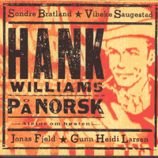

VA - Hank Williams På Norsk (Compilation, 1995)
Vibeke Saugestad:
01 - Jeg Sitter I Klisteret Helt Til Jeg Dør (2:34)
Jonas Fjeld:
02 - D' Ække Min Skyld (At Jeg Fortsatt Elsker Deg) (3:08)
Sondre Bratland:
03 - Luftslott I Det Blå (2:56)
Gunn Heidi Larsen:
04 - Flytt Deg Til Sida (3:21)
Vibeke Saugestad:
05 - Aleine Om Høsten (4:40)
Jonas Fjeld:
06 - Jeg Er Trøtt Og Lei Av Vente (2:46)
Gunn Heidi Larsen:
07 - Styla Lada (3:29)
Sondre Bratland:
08 - No Ser Eg Ljos (4:47)
Jonas Fjeld:
09 - Folk Med Knuste Blikk (4:31)
Gunn Heidi Larsen:
10 - Du Var Så Lur (4:12)
Vibeke Saugestad:
11 - Bare Ikke Bry Deg (2:59)
Sondre Bratland:
12 - Eg Er Einsam Med Min Gråt (4:01)
© Kirkelig Kulturverksted :: [FXCD 158]
Notes
Review
333/366 (Project 366)
So, today is a special day. And besides that, a special week. Thus, I decided to review a kind of tribute to Hank Williams in Norwegian language. This is a compilation of Hank Williams songs sung and performed by different artists from Norway.
It is even interesting how many songs could be recognized by hearing them purely by chance. They sound so native. However, because the arrangements have an effect. Sometimes more modern, sometimes full of traditional sound and Nordic vibe. To a greater extent, this is Folk Rock, Country Rock. And in some ways familiar songs sound unusual even with their melody. I can not say that this is the best possible. But there are a lot of very interesting and curious moments.